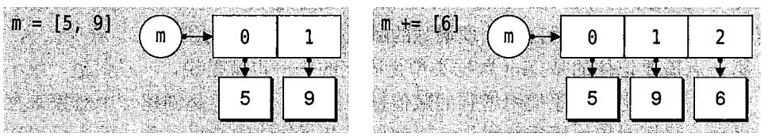

Python 関数
関数は、整理された、再利用可能な、単一または関連する機能を実現するためのコードブロックです。
関数はアプリケーションのモジュール性とコードの再利用性を高めます。Pythonがprint()のような多くの組み込み関数を提供していることはすでにご存じでしょう。しかし、自分で関数を作成することもできます。これはユーザー定義関数と呼ばれます。
関数を定義する
自分が望む機能を持つ関数を定義できます。以下は簡単なルールです：
- 関数のコードブロックはdefキーワードで始まり、その後に関数識別子の名前と丸括弧が続きます。()。
- 渡されるすべてのパラメータと引数は丸括弧の中に置く必要があります。丸括弧の間にパラメータを定義できます。
- 関数の最初の行には、オプションでドキュメンテーション文字列（関数の説明を格納するためのもの）を使用できます。
- 関数の本体はコロンで始まり、インデントされます。
- return [式]関数を終了し、オプションで呼び出し元に値を返します。式を伴わないreturnはNoneを返すのと同じです。
構文
デフォルトでは、パラメータ値とパラメータ名は関数宣言で定義された順序で照合されます。
例
以下は、文字列をパラメータとして受け取り、それを標準出力に表示する簡単なPython関数です。
例(Python 2.0+)
関数呼び出し
関数を定義すると、関数に名前が与えられ、関数に含まれるパラメータとコードブロックの構造が指定されます。
この関数の基本構造が完成したら、別の関数から呼び出して実行することも、Pythonプロンプトから直接実行することもできます。
次の例では、printme（）関数を呼び出しています：
例(Python 2.0+)
上記の例の出力結果：
我要调用用户自定义函数! 再次调用同一函数
パラメータ渡し
pythonでは、型はオブジェクトに属し、変数には型がありません：
上記のコードでは、[1,2,3]は List 型であり、"Runoob"は String 型であり、変数 a には型がありません。a は単なるオブジェクトへの参照（ポインタ）であり、List 型のオブジェクトを指すことも、String 型のオブジェクトを指すこともできます。
変更可能(mutable)と変更不可能(immutable)オブジェクト
pythonでは、strings、tuples、numbers は変更不可能なオブジェクトであり、list、dict などは変更可能なオブジェクトです。
不変型：変数代入a=5後に再代入すると、a=10ここでは実際には新しいint値オブジェクト10が生成され、aがそれを指すようにします。5は破棄され、aの値を変更するのではなく、aが新しく生成されたのと同じです。
可変型：変数代入la=[1,2,3,4]後に再代入すると、la[2]=5これは list la の3番目の要素の値を変更するもので、la 自体は変更されず、その内部の一部の値だけが変更されます。
python の関数のパラメータ渡し：
不変型：c++ の値渡しに似ています。整数、文字列、タプルなどです。fun（a）の場合、渡されるのは a の値だけで、a オブジェクト自体には影響しません。たとえば fun（a）の内部で a の値を変更しても、それはコピーされた別のオブジェクトを変更するだけで、a 自体には影響しません。
可変型：c++ の参照渡しに似ています。リスト、辞書などです。fun（la）の場合、la が実際に渡され、変更後は fun の外部の la も影響を受けます。
python ではすべてがオブジェクトです。厳密には値渡しか参照渡しかとは言えず、不変オブジェクトを渡すか可変オブジェクトを渡すかと言うべきです。
python で不変オブジェクトを渡す例
例(Python 2.0+)
例には int オブジェクト 2 があり、それを指す変数は b です。ChangeInt 関数に渡すとき、値渡しの方法で変数 b がコピーされ、a と b は同じ Int オブジェクトを指します。a=10 のとき、新しい int 値オブジェクト 10 が生成され、a がそれを指すようにします。
可変オブジェクトを渡す例
例(Python 2.0+)
例では、関数に渡すオブジェクトと末尾に新しい内容を追加するオブジェクトは同じ参照を使用しているため、出力結果は次のようになります。
函数内取值: [10, 20, 30, [1, 2, 3, 4]] 函数外取值: [10, 20, 30, [1, 2, 3, 4]]
パラメータ
以下は、関数を呼び出すときに使用できる正式なパラメータの型です：
- 必須パラメータ
- キーワードパラメータ
- デフォルトパラメータ
- 可変長パラメータ
必須パラメータ
必須パラメータは正しい順序で関数に渡す必要があります。呼び出し時の数は宣言時と同じでなければなりません。
printme() 関数を呼び出すには、1つのパラメータを渡す必要があります。そうしないと構文エラーが発生します：
例(Python 2.0+)
上記の例の出力結果：
Traceback (most recent call last):
File "test.py", line 11, in <module>
printme()
TypeError: printme() takes exactly 1 argument (0 given)
キーワードパラメータ
キーワードパラメータは関数呼び出しと密接に関係しており、関数呼び出しはキーワードパラメータを使用して渡すパラメータ値を決定します。
キーワードパラメータを使用すると、関数呼び出し時のパラメータの順序が宣言時と異なっていても構いません。Python インタプリタはパラメータ名でパラメータ値を照合できるからです。
次の例では、関数 printme() の呼び出し時にパラメータ名を使用しています：
例(Python 2.0+)
上記の例の出力結果：
My string
次の例は、キーワードパラメータの順序が重要でないことをより明確に示しています：
例(Python 2.0+)
上記の例の出力結果：
Name: miki Age 50
デフォルトパラメータ
関数を呼び出すとき、デフォルトパラメータの値が渡されない場合、その値はデフォルト値と見なされます。次の例では、age が渡されない場合にデフォルトの age を印刷します：
例(Python 2.0+)
上記の例の出力結果：
Name: miki Age 50 Name: miki Age 35
可変長パラメータ
当初の宣言よりも多くのパラメータを処理できる関数が必要になるかもしれません。これらのパラメータは可変長パラメータと呼ばれ、前述の2種類のパラメータとは異なり、宣言時に名前を付けません。基本構文は次のとおりです：
アスタリスク（*）を付けた変数名には、名前のないすべての変数パラメータが格納されます。可変長パラメータの例は次のとおりです：
例(Python 2.0+)
上記の例の出力結果：
输出: 10 输出: 70 60 50
匿名関数
Python は lambda を使って匿名関数を作成します。
- lambdaは単なる式であり、関数本体はdefよりもはるかに簡単です。
- lambdaの本体は式であり、コードブロックではありません。lambda式には限られたロジックしかカプセル化できません。
- lambda関数は独自の名前空間を持ち、自身の引数リストの外部やグローバル名前空間にある引数にはアクセスできません。
- lambda関数は1行でしか書けないように見えますが、CやC++のインライン関数とは異なります。後者は小さな関数を呼び出す際にスタックメモリを消費せず、実行効率を高めることを目的としています。
構文
lambda関数の構文は次のように1つのステートメントのみで構成されます：
lambda [arg1 [,arg2,.....argn]]:expression
以下の例のとおりです：
例(Python 2.0+)
上記の例の出力結果：
相加后的值为 : 30 相加后的值为 : 40
return 文
return文[式]は関数を終了し、呼び出し元に式を選択的に返します。引数値なしのreturn文はNoneを返します。これまでの例では数値を返す方法を示していませんでしたが、次の例でその方法を説明します：
例(Python 2.0+)
上記の例の出力結果：
函数内 : 30
変数のスコープ
プログラム内のすべての変数がどの位置からでもアクセスできるわけではありません。アクセス権限は、その変数がどこで代入されたかによって決まります。
- グローバル変数
- ローカル変数
グローバル変数とローカル変数
関数内で定義された変数はローカルスコープを持ち、関数外で定義された変数はグローバルスコープを持ちます。
ローカル変数は宣言された関数の内部でのみアクセスでき、グローバル変数はプログラム全体でアクセスできます。関数を呼び出すと、関数内で宣言されたすべての変数名がスコープに追加されます。以下の例のとおりです：
例(Python 2.0+)
上記の例の出力結果：
函数内是局部变量 : 30 函数外是全局变量 : 0その他の拡張
bling coin
zha***nszg@126.com
#!/usr/bin/python # -*- coding: UTF-8 -*- globvar = 0 def set_globvar_to_one(): global globvar # 使用 global 声明全局变量 globvar = 1 def print_globvar(): print(globvar) # 没有使用 global set_globvar_to_one() print globvar # 输出 1 print_globvar() # 输出 1，函数内的 globvar 已经是全局变量1、global---変数をグローバル変数として定義します。グローバル変数として定義することで、関数の内部で変数の値を変更できます。
2、1つのglobal文で複数の変数を同時に定義できます。例: global x, y, z
bling coin
zha***nszg@126.com
BMPixel
194***4370@qq.com
リスト反転関数:
Python2 コード：
#!/user/bin/python # -*- coding: UTF-8 -*- def reverse(li): for i in range(0, len(li)/2): temp = li[i] li[i] = li[-i-1] li[-i-1] = temp l = [1, 2, 3, 4, 5] reverse(l) print(l)Python3 コード：
#!/user/bin/python3 def reverse(li): for i in range(0, len(li)//2): temp = li[i] li[i] = li[-i-1] li[-i-1] = temp l = [1, 2, 3, 4, 5] reverse(l) print(l)BMPixel
194***4370@qq.com
King
kin***63.com
リスト反転関数その2:
def reverse(ListInput): RevList=[] for i in range (len(ListInput)): RevList.append(ListInput.pop()) return RevListKing
kin***63.com
songy
son***010@live.cn
リスト反転の簡略化：
def reverse(li): for i in range(0, len(li)/2): # python3 下使用 len(li)//2 li[i], li[-i - 1] = li[-i - 1], li[i] l = [1, 2, 3, 4, 5] reverse(l) print(l)songy
son***010@live.cn
shiyeweimian
860***758@qq.com
参考リンク
についてreturn fun 和 return fun()の違い：
>>> def funx(x): def funy(y): return x * y return funy #return funy返回的是一个对象，可理解为funx是funy的一个对象 >>> funx(7)(8) 56 >>> def funx(x): def funy(y): return x * y return funy() #return funy()返回的是funy的函数返回值，所以此处报错 >>> funx(7)(8) Traceback (most recent call last): File "<pyshell#5>", line 1, in <module> funx(7)(8) File "<pyshell#4>", line 4, in funx return funy() TypeError: funy() takes exactly 1 argument (0 given) >>> def funx(x): def funy(y): return x * y return funy(8) >>> funx(7) 56shiyeweimian
860***758@qq.com
参考リンク
santiago
408***468@qq.com
Python では、型はオブジェクトに属し、変数には型がありません。
上記のコードでは、[1,2,3] は List 型、"Runoob" は String 型であり、変数 a には型がありません。a は単なるオブジェクトへの参照（ポインタ）であり、List 型オブジェクトにも String 型オブジェクトにもなり得ます。
santiago
408***468@qq.com
Sonnet
gra***nnet@qq.com
参考リンク
DocStringsドキュメント文字列は、プログラムを説明するための重要なツールであり、プログラムのドキュメントをよりシンプルで理解しやすくするのに役立ちます。
#!/usr/bin/python # -*- coding: UTF-8 -*- def function(): ''' say something here！ ''' pass print (function.__doc__) # 调用 docDocStringsドキュメント文字列の使用慣例：最初の行で関数の機能を簡潔に説明し、2行目は空行、3行目に関数の具体的な説明を書きます。
詳細は以下を参照してください：Python ドキュメント文字列(DocStrings)
Sonnet
gra***nnet@qq.com
参考リンク
天天学python
495***929@qq.com
#!/usr/bin/python # -*- coding: UTF-8 -*- def printme( str, int ): print str,int return # int, str 顺序和定义时的顺序不一样，最终输出按照 print 的顺序 printme(int=10, str = "My string")出力結果は：My string 10
上記は具体的な例であり、理解を深めるのに役立ちます。キーワード引数を使用すると、関数呼び出し時の引数の順序が宣言時と異なっていても、Python インタープリタが引数名で引数値を照合できるためです。
天天学python
495***929@qq.com
销售
axi***n1989@qq.com
#!/usr/bin/python3 def arras(x,y,z=4,*param,**params): print(x,y,z) for i in range(len(param)): print(param[i]) for j in params: print(j+':'+params[j]) arras(1,2,3,4,5,'Python 风格规范(Google)本项目并非Google 官方项目,.。',foo='foo1=100',h00='hoo1=200',koo='koo1=4000')出力結果：
結論：可変長引数*出力は通常タプルの構造形式です。**二重星印（**）の出力は辞書形式の構造です。値を渡す際にも値が正確に一致するようにしなければなりません。そうしないとエラーになります。
销售
axi***n1989@qq.com
sunird
118***9011@qq.com
関数のメソッド名も別の関数のパラメータとして使用できます。
このうちaddメソッドはadd_twiceメソッド内でパラメータとして呼び出されます。
sunird
118***9011@qq.com
yefeidd
zjs***803757@qq.com
リストの参照オブジェクトを新しく作成することで、関数内部でリストを変更しても外部のオブジェクトに影響を与えないようにできます。
yefeidd
zjs***803757@qq.com
hamilton
123***c.com
参考リンク
この節の可変/不変オブジェクトの引数渡しに関する補足：
Python は heap 内に割り当てられたオブジェクトを2種類に分類します：可変オブジェクトと不変オブジェクトです。可変オブジェクトとは、オブジェクトの内容が変更可能であるものを指します（例: list）。一方、不変オブジェクトはその逆で、内容が変更できないことを意味します。
一、不変オブジェクト
Python の変数はオブジェクト参照を格納するため、不変オブジェクトの場合、オブジェクト自体は不変でも、変数のオブジェクト参照は変更可能です。この仕組みにより、可変オブジェクトが変化したかのように見えて混乱することがあります。以下のコードを見てください：
上記からわかるように、不変オブジェクトの特性は変わらず、依然として不変オブジェクトです。変わったのは、新しいオブジェクトが作成され、変数のオブジェクト参照が変更されただけです。
次のコードを見ると、この点がより明確にわかります。
二、可変オブジェクトについて
そのオブジェクトの内容は変更可能です。オブジェクトの内容が変化しても、変数のオブジェクト参照は変わりません。以下の例のとおりです。

hamilton
123***c.com
参考リンク